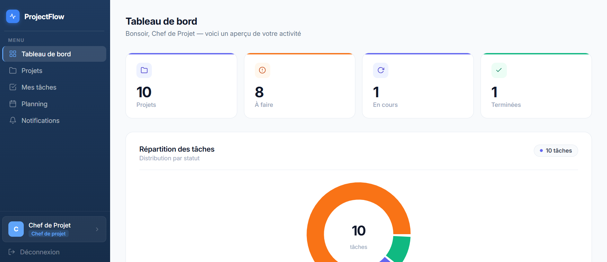
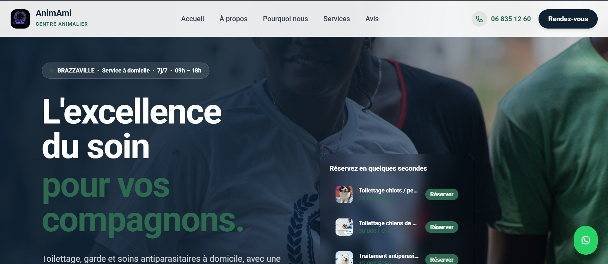
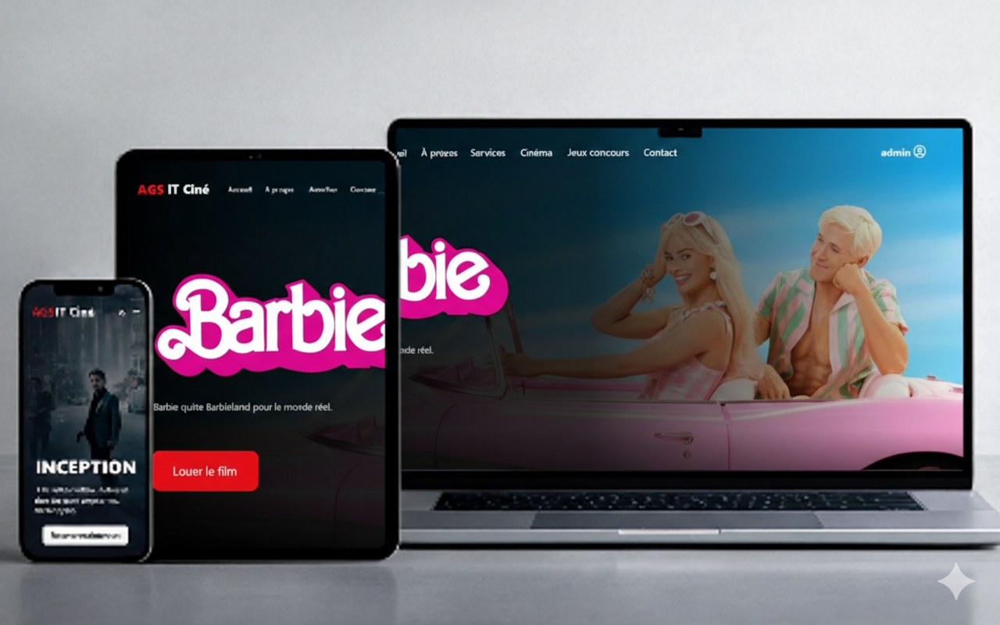

Parcours
Ma transition du développement logiciel vers l'administration systèmes, l'infrastructure et le DevOps.
Bachelor 3 — Administrateur Systèmes, Réseaux & BDD
Spécialisation en administration systèmes, infrastructure réseau, bases de données et DevOps. Formation en alternance : 2 semaines entreprise / 1 semaine école.
BTS SIO — Option SLAM (obtenu)
SCHOLIA, France
Formation en développement web et logiciel. Projets pratiques : API REST, application mobile, CI/CD, cybersécurité. Diplôme obtenu en 2026.
Baccalauréat Scientifique C
Lycée Imma-Ngankou, Congo
Spécialité Mathématiques et Physique — raisonnement logique et analytique, socle fondamental de l'informatique.
Compétences
Compétences techniques acquises en projets pratiques et en autoformation.
Compétences techniques détaillées
Linux Ubuntu Server
75%Bash / SSH / SCP
65%Windows Server 2022
65%Active Directory / DNS / DHCP
60%TCP/IP / Réseaux
60%PowerShell
55%Docker & Docker Compose
70%Nginx reverse proxy
65%GitHub Actions CI/CD
65%AWS (IAM, EC2, VPC, S3)
35% — apprentissageAzure (AZ-900)
30% — préparationPHP / SQL
75%MySQL
80%JavaScript
50%Laravel
45%VS Code
95%Git / GitHub
80%UML / MERISE
55%Postman
70%Réalisations
Projets techniques réalisés en infrastructure, DevOps et développement.
DevOps Initiate — Infrastructure conteneurisée
Stack complète : Nginx (reverse proxy) + PHP 8.2 FPM + MySQL 8, orchestrée avec Docker Compose sur VM Ubuntu Server. Pipeline CI/CD GitHub Actions avec build automatique et test de disponibilité à chaque push. Accès SSH depuis Windows vers VM Ubuntu.
Lab Active Directory — Windows Server 2022
Installation et configuration de Windows Server 2022 : Active Directory, DNS, DHCP sur domaine merveille.local. 1 VM Windows Server + 1 VM Ubuntu. 3 unités d'organisation, 3 groupes (Direction, RH, Informatique), 3 utilisateurs gérés via PowerShell. Communication réseau vérifiée (ping + nslookup DNS).

Projet BTS — FullstackProjectFlow — Gestion de projets collaboratifs
Plateforme fullstack : API REST Laravel, interface web React, application mobile React Native. Déployée en production avec CI/CD automatisé sur Railway et Vercel.

Projet client réelAnimAmi Centre Animalier
Site full-stack complet pour une entreprise congolaise. Déploiement en production avec CI/CD FTP automatisé via GitHub Actions.

Stage AGS ITAGS IT Ciné
Site cinéma avec contenus dynamiques, développé en autonomie.
 Projet personnel
Projet personnel
Portfolio personnel
Portfolio responsive animé — conception et développement complets.
Expériences professionnelles
Expériences acquises en entreprise pendant ma formation BTS SIO.
Technicienne déploiement & environnements web — Stage
AnimAmi Centre Animalier · Startup · Congo · 1 moisMise en production complète du site officiel d'AnimAmi. Configuration de l'environnement PHP/MySQL, déploiement automatisé via GitHub Actions (FTP vers Hostinger), résolution de problèmes techniques en autonomie.
- Configuration environnement PHP/MySQL et gestion BDD
- Déploiement continu : pipeline GitHub Actions → FTP Hostinger
- Développement front-end et back-end (HTML, CSS, JS, PHP)
- Mise en ligne et tests fonctionnels sur animamicanimalier.com
Développeuse Web Junior — Stage
AGS IT · Développement & Services IT · 2 moisDéveloppement en autonomie du site AGS IT Ciné. Conception, développement, intégration et versionnement Git.
- Développement full-stack du site en autonomie
- Animations et interactions JavaScript avancées
- Intégration de contenus dynamiques PHP/MySQL
- Versionnement Git/GitHub
Développeuse Web Junior — Stage
Business Privée · Cabinet de conseil · 1 moisIntégration d'un site vitrine one-page pour cabinet de conseil. Travail en équipe.
- Intégration HTML/CSS fidèle aux maquettes
- Adaptation responsive multi-écrans
Veille Technologique
Suivi régulier des évolutions en infrastructure, Cloud et DevOps.
Définition
La veille technologique est un processus continu de surveillance des évolutions du domaine informatique, permettant d'anticiper les changements et d'adapter ses pratiques.
Mon sujet
L'évolution des pratiques DevOps et de l'infrastructure Cloud : conteneurisation, CI/CD, orchestration, sécurité des systèmes et services managés AWS/Azure.
Méthode
Consultation régulière de la documentation officielle Docker, AWS, Azure, des blogs techniques (Dev.to, The New Stack, CNCF), des releases GitHub et des plateformes Udemy.
Fiches de veille
Docker Compose v2 — Orchestration de services conteneurisés
Docker Compose v2 permet de définir et gérer des applications multi-conteneurs via un fichier YAML. Les réseaux, volumes et dépendances entre services sont gérés automatiquement, simplifiant le déploiement d'environnements complets.
GitHub Actions — Automatisation CI/CD par fichiers YAML
GitHub Actions permet d'automatiser les workflows de développement directement dans le dépôt. Les pipelines se déclenchent à chaque push : tests automatiques, build et déploiement sans intervention manuelle.
Active Directory — Gestion centralisée des identités
Active Directory Domain Services (AD DS) permet de centraliser l'authentification et la gestion des utilisateurs, groupes et stratégies (GPO) dans un réseau Windows. DNS et DHCP intégrés assurent la résolution de noms et l'attribution des adresses IP.
AWS Cloud Practitioner — Fondamentaux du Cloud AWS
La certification AWS Cloud Practitioner couvre les concepts fondamentaux du cloud : services principaux (EC2, S3, VPC, IAM), modèles de déploiement, sécurité et facturation. Elle constitue la première étape vers les certifications AWS spécialisées.
OWASP Top 10:2025 — Failles critiques des applications web
L'OWASP Top 10:2025 actualise les vulnérabilités les plus critiques, incluant les injections, mauvaises configurations de sécurité et défaillances d'authentification. Essentiel pour sécuriser les environnements applicatifs.
Nginx — Reverse proxy et gestion du trafic
Nginx est un serveur web haute performance utilisé comme reverse proxy pour distribuer le trafic entre plusieurs services back-end. Il gère le load balancing, la terminaison SSL et la mise en cache, et s'intègre nativement dans les architectures Docker.
Contact
Vous souhaitez me contacter ? Je suis disponible par les canaux suivants.